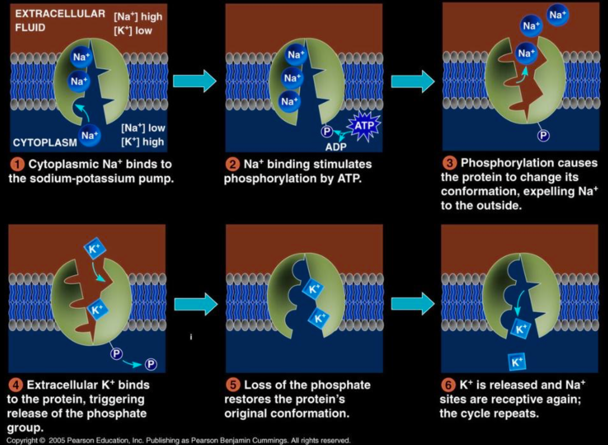
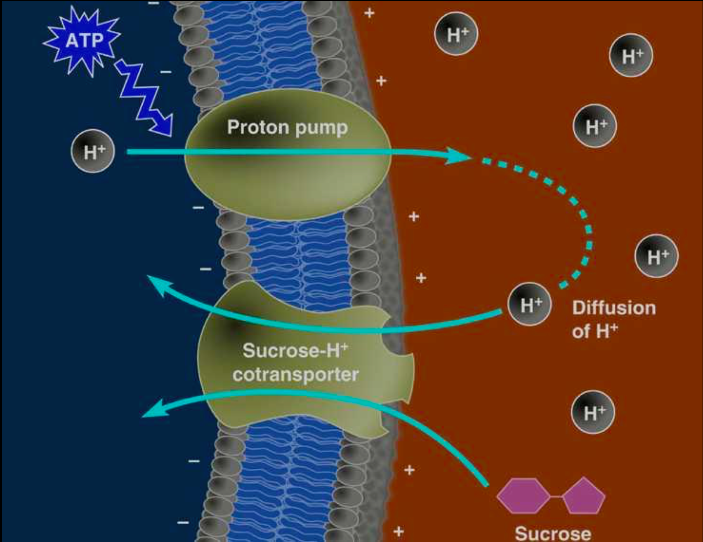
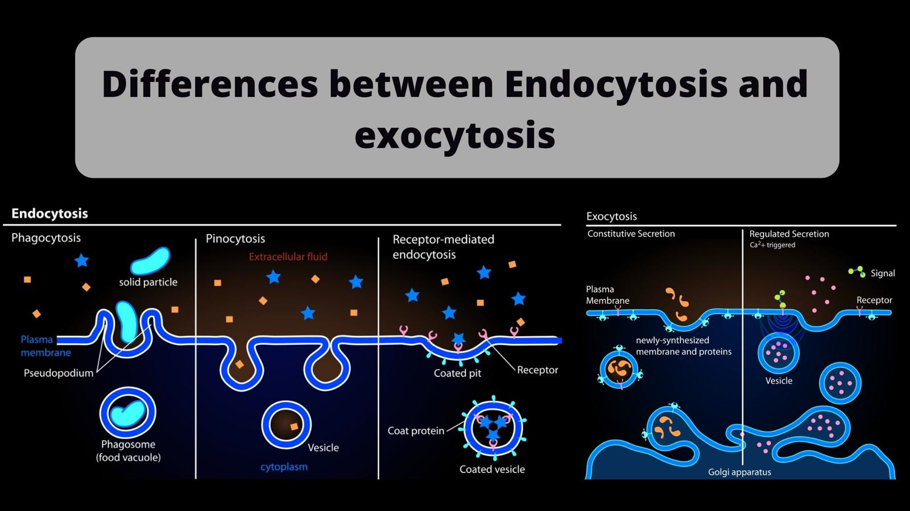

Active Transport
- The reason facilitated diffusion is considered passive transport is because the solute is moving down its concentration gradient. Any transport that goes against the concentration gradient (from lower concentration to higher concentration of solute) is considered active transport, meaning that it requires energy.
- In this case, the transport proteins are all carrier proteins. ATP is the one that powers this transport, for example, by directly transferring its terminal phosphate group to the transport protein.
- One transport system that works this way is the sodium-potassium pump, in which for each 3 \(\text{Na}^+\) that are taken out of the cell, 2 \(\text{K}^+\) are brought inside the cell.

- All cells have voltages (electrical potential energy) across their plasma membranes. The cytoplasmic side of the membrane is negative in charge relative to the extracellular side due to an unequal distribution of cations and anions on the two sides. The voltage across a membrane is called membrane potential (ranges from -50 to -200 mV). Therefore, the passive transport of anions to the outside of the cell and of cations to the inside of the cell is favoured. As so, the diffusion of ions is driven both by a chemical force (the concentration gradient) and by an electrical force (effect of the membrane potential) and this combination of forces is called the electrochemical gradient. For that reason, ions don't just go down the concentration gradient, but a more correct way of describing it is down the electrochemical gradient, this being the case in which both chemical and electrical forces act in the same direction, but this is not always the case (again, this is explaining the phenomenon for the passive transport! It is information necessary for the next part of the chapter, that is why it has been included here).
- When the electrical force opposes the chemical one, active transport is necessary. Some membrane proteins that actively transport ions contribute to the membrane potential by generating voltage across a membrane and these are called electrogenic pumps. The most important electrogenic pump in animal cells is the sodium-potassium pump, while in plant, fungi and bacteria cells it is a proton pump (which actively transports hydrogen ions \(\text{H}^+\)), which are important in the ATP synthesis during cellular respiration.
- In a mechanism called cotransport, a transport protein can couple the diffusion of a solute to the transport of a second substance against its own concentration gradient. For example, a plant cell uses the gradient of \(\text{H}^+\) generated by ATP powered proton pumps to drive the active transport of amino acids, sugars and other nutrients into the cell. Therefore, this protein can translocate the substance into the cell against its concentration gradient only if it is accompanied by \(\text{H}^+\) ions, moving in the same direction.
- Plants use \(\text{H}^+\)/sucrose cotransport to load sucrose produced by photosynthesis in the veins of leaves, which bring it to non-photosynthetic parts of the plant, which are low on sugars.

- In animals, a \(\text{Na}^+\)/glucose cotransport in intestinal cells poses a very important role in the regulation of Na+ concentration. Normally, \(\text{Na}^+\) is reabsorbed from waste in the colon but in cases of diarrhea the waste moves too quickly and therefore a life-threatening amount of \(\text{Na}^+\) is eliminated from the body. To minimize the effect of this, a high intake of \(\text{NaCl}\) and glucose is necessary for the cotransport in the intestines.
Exocytosis
- The process through which the cell secretes certain molecules by the fusion of vesicles through the plasma membrane is called exocytosis.
- A transport vesicle that comes from the Golgi apparatus travels along a microtubule from the cytoskeleton to the plasma membrane, which when getting in contact with the membrane of the vesicle, the two have proteins that rearrange the lipids in the membrane so that the two can fuse, and therefore the vesicle membrane becomes part of the cell membrane, while its contents spill to the outside of the cell.
- This type of transport is used by secretory cells to export products. For example, pancreas cells eliminate insulin (a hormone that is formed inside the pancreas) through exocytosis. Nerve cells use it to eliminate neurotransmitters, while plant cells use it to transport proteins and carbohydrates which are necessary for building cell walls.
Endocytosis
- The process through which the cell takes in molecules by forming new vesicles from the plasma membrane is called endocytosis. Although the proteins involved are different from the ones in exocytosis, the endocytosis looks reversed to the exocytosis.
- Phagocytosis is the intake of solid particles. By extending pseudopodia from the cell around the particle, it packages it in a membranous sac called a food vacuole, which will the be digested after fusing with a lysosome containing hydrolytic enzymes.
- Pinocytosis is the intake of fluid into the cell. Droplets of extracellular fluid are taken in vesicles formed from the membrane. This type of transport is nonspecific as the droplets contain dissolved molecules which cannot be selected before being taken in. The parts of the membrane that form vesicles are coated on the inside with coat proteins and these resulting vesicles are called coated pits.
- Receptor-mediated endocytosis is a specialized type of pinocytosis. Its goal is to acquire a certain substance in a big quantity. The parts of the plasma membrane that have coat proteins also have a receptor site, to which the necessary substance binds, causing the vesicle (that contain those receptors) to form and to bring in the fluid that contains the desired molecules. After the ingested material is let out from the vesicle to the cytoplasm, that same vesicle brings the receptors back to the membrane.

Written by Bianca Buzas